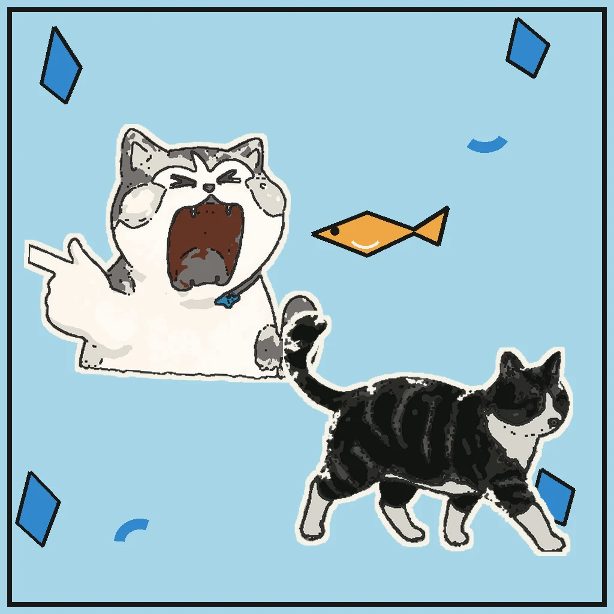
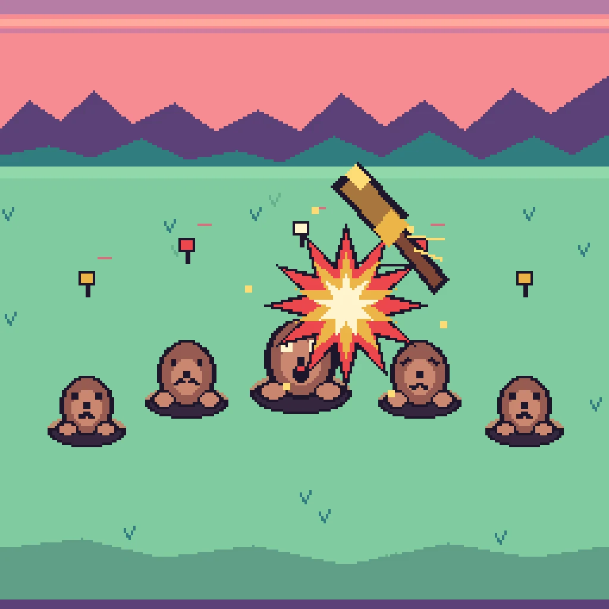
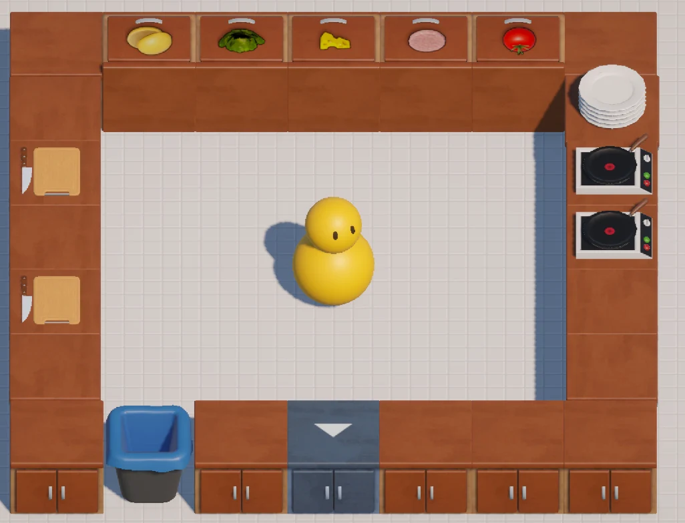
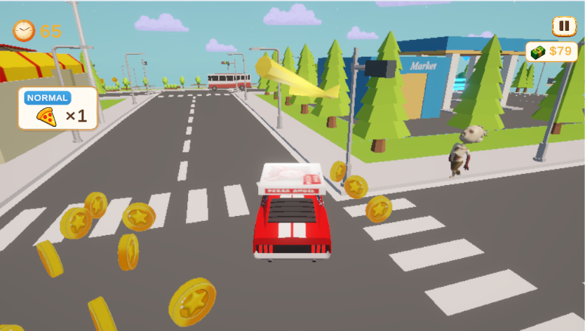
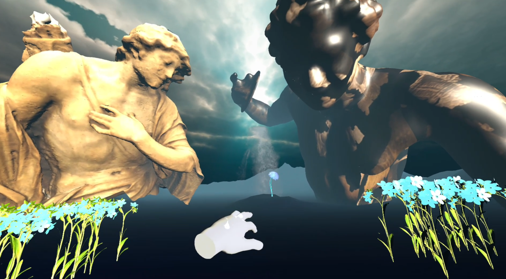
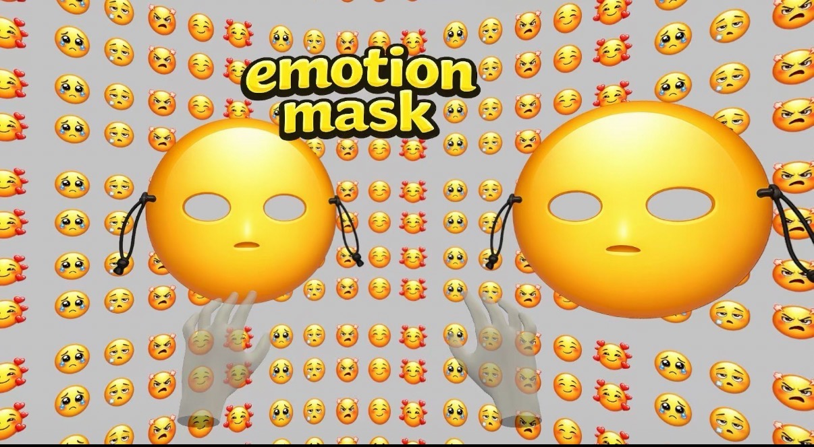
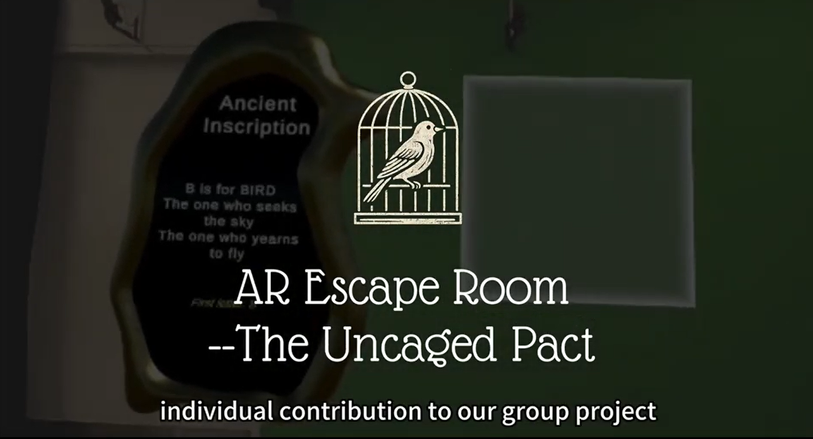
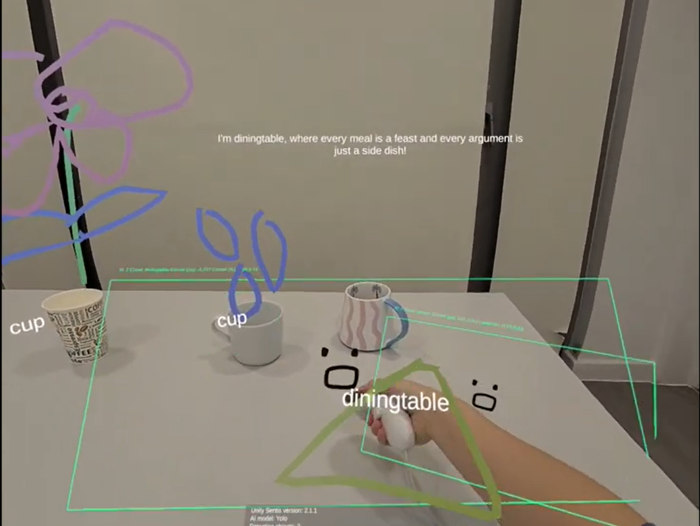

VISUAL STUDIES / ARCHIVE VIEW
3D Studies
MODELING / MATERIALS / ANIMATION
XR INTERACTION DESIGNER / UNITY PROTOTYPER
BUILDING PLAYFUL SYSTEMS FOR BODIES, SENSORS AND SPACE
A series of experimental embodied-interaction explorations, translating EMG, motion, force, and sensor signals into playful systems.

P.01PHYSICS / ANIMATION

P.02DSP / TIMING / AUDIO
IMU / WRIST ROTATION / PITCH
 P.04
P.043D PHYSICS / FORCE CONTROL

P.05CUSTOM INPUT / UNITY

P.063D / ITERATION / TEST
 P.07
P.07GESTURE / MOBILE AR
Bodies, hands and environments become the interface. Four projects stay visible here as one field; the immersive archive opens a second spatial layer.

BODY-DRIVEN LOCOMOTION / SPATIAL HORROR

HAND TRACKING / EMBODIED METAPHOR

SPATIAL PUZZLES / TEAM EXPERIENCE

AR / AI / AMBIENT INTERACTION
I independently built the Unity WebGL prototype, then used three completed Poki test rounds of 500 recorded plays each to refine onboarding, task clarity, and the delivery progression loop. Visible average playtime rose from 1 minute 14 seconds to 1 minute 46 seconds and then 1 minute 53 seconds; the record does not isolate any single change as the cause.
ROLE / Unity Game Developer & Designer
I developed a Meta Quest 3 prototype with 2D and 3D creation modes, then ran an 18-participant study using questionnaires and interviews to compare behaviour and preferences. The findings became interaction and feedback recommendations for the next iteration.
ROLE / VR Developer & UX Researcher
Plant Bot is a physical-computing prototype that maps plant-care data to emotional states, care prompts, and contextual AR feedback. I connected user research and interaction design with a web interface, Arduino/ESP32 sensing, circuit and PCB work, 3D modelling and printing, Unity/AR integration, and physical assembly. User comprehension, sensor accuracy, and AR runtime results remain pending validation.
ROLE / Interaction Designer & XR Developer
Every project from the reference portfolio is available here with its original project copy, media, contribution notes, and validation boundaries.
Smaller explorations that show visual craft, technical curiosity, and ideas still in motion.
MODELING / MATERIALS / ANIMATION
SHADER / VFX / PARTICLES / INTERACTION FEEDBACK
GAME JAM / MICRO PROTOTYPES / ONGOING STUDIES
A repeatable process for turning unfamiliar technologies into interactions people can understand and test.
Read gestures, body signals, sensors, or player behaviour.
Define actions, system states, thresholds, and feedback.
Build the smallest playable system that can answer the design question.
Use observation, interviews, and behavioural data to guide iteration.
Short personal story connecting Computer Science, XR/VR study, embodied interaction, and evidence-led prototyping.